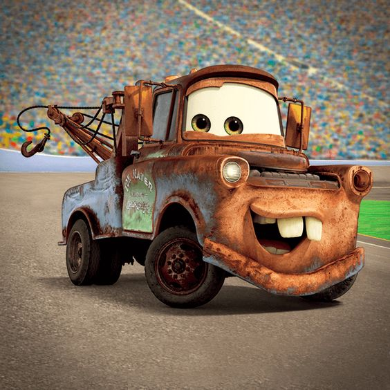

-> O Marter é um dos personagens mais lembrados pelo o povo, perdendo apenas pelo o protagonita.
-> Ele também é um personagem de alivio cômico, engraçado e MUITO sonso.
-> McQuenn é o protagonista do filme, ótimo carisma.
-> É super famoso, esforçado e engraçado.